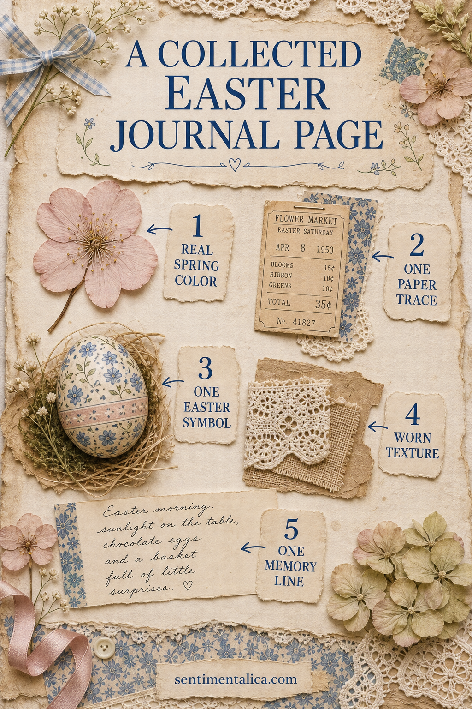
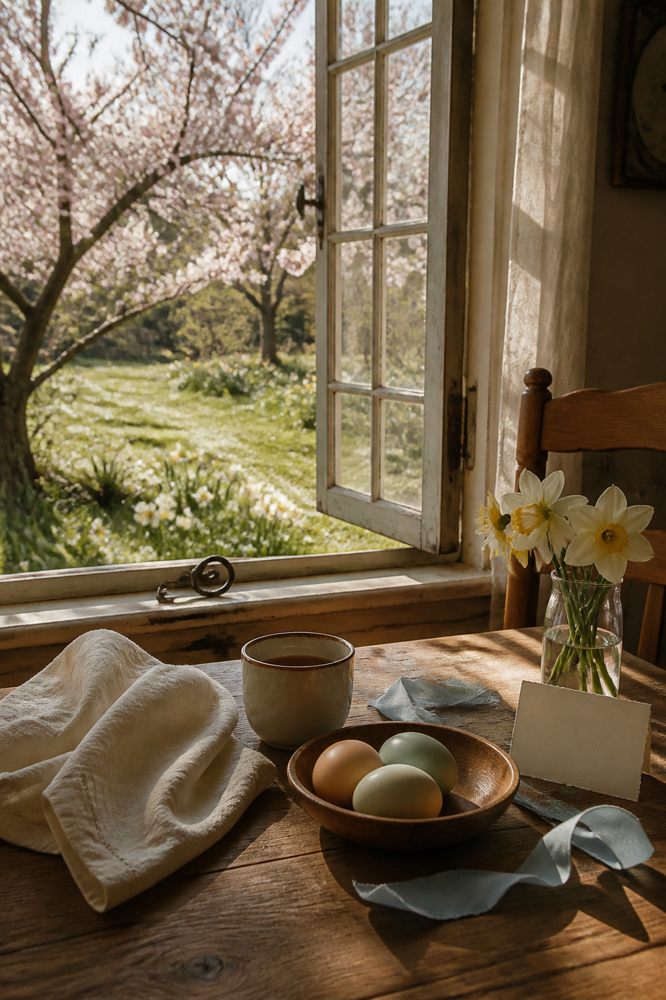
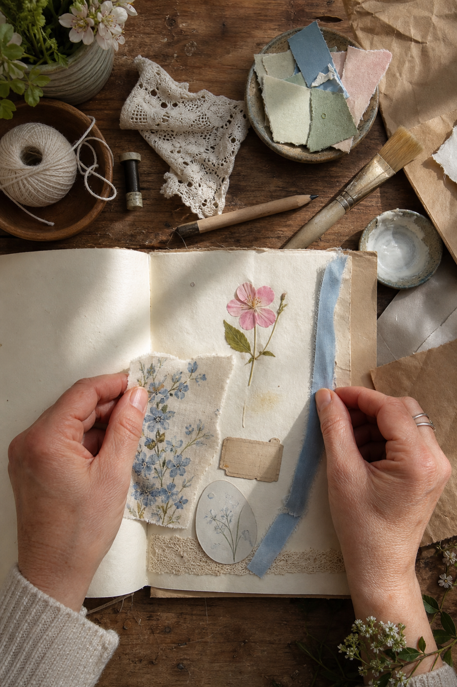
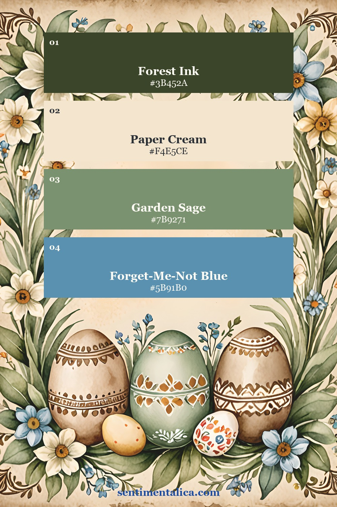
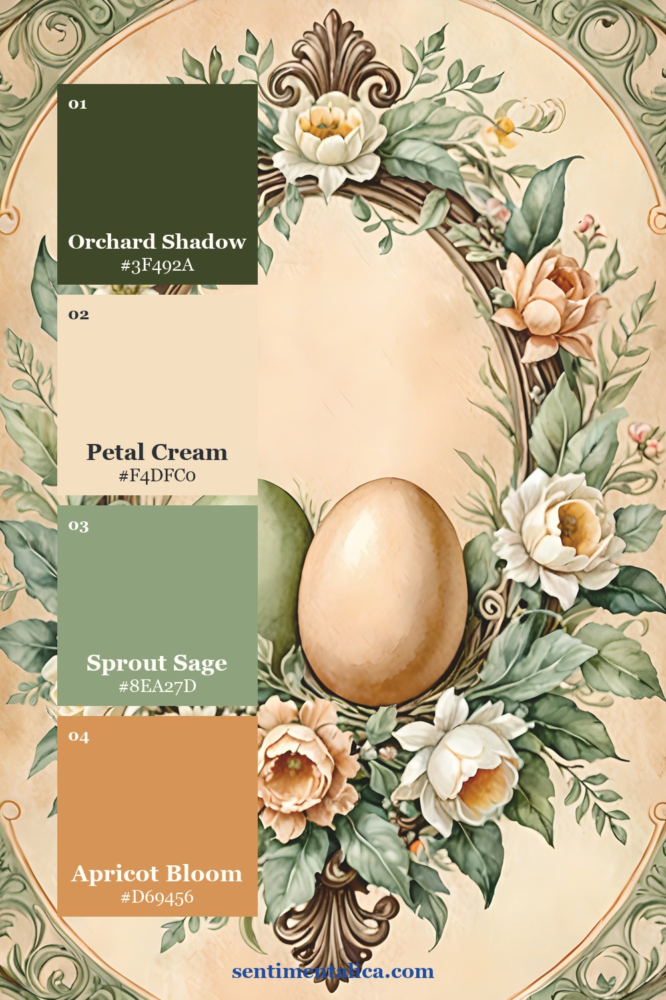
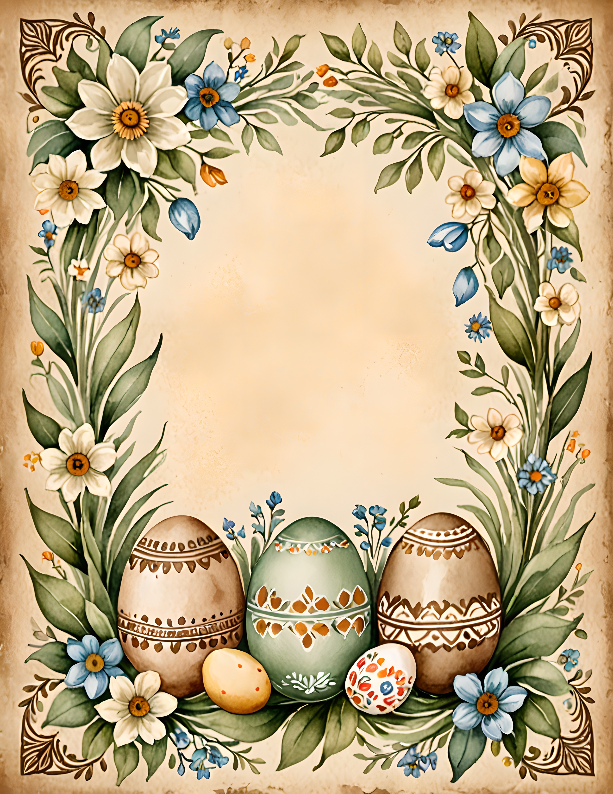
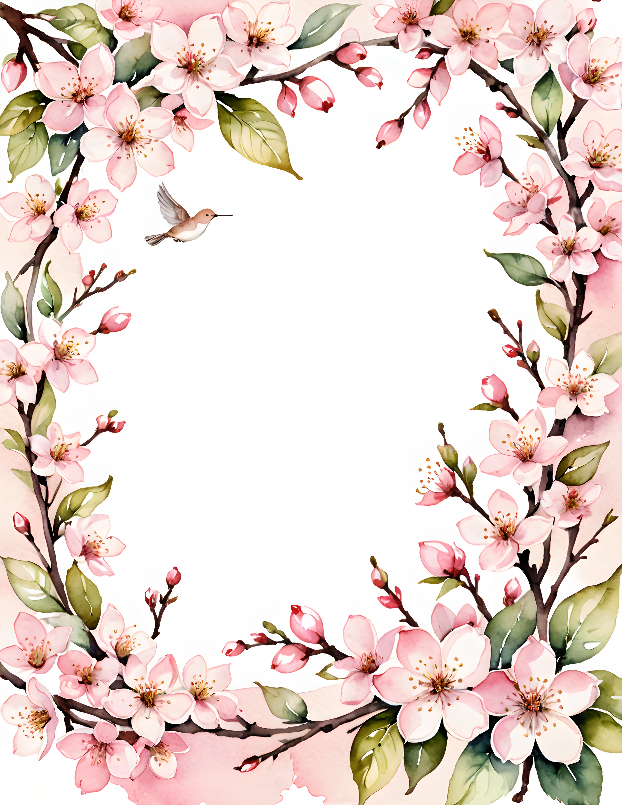
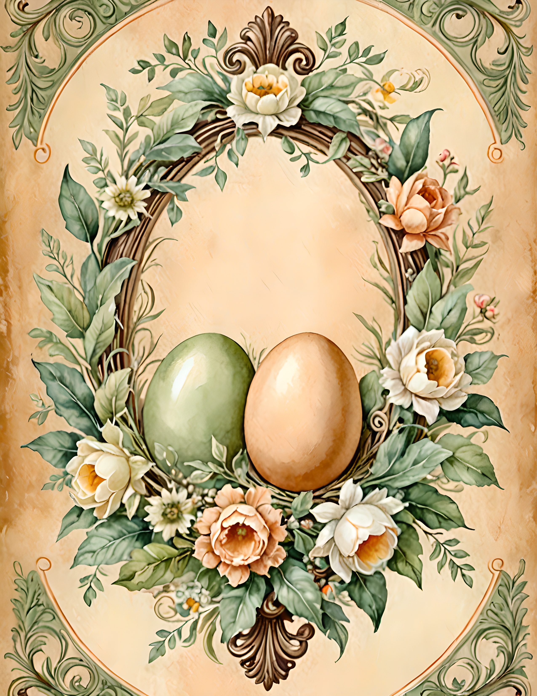

Easter junk journal ideas can become very literal very quickly. Add a bunny, a basket, six decorated eggs, a chick, and three pastel ribbons, and the page begins to feel like seasonal packaging. A more personal Easter page starts with what the day actually felt like. Then it uses one familiar symbol as a quiet clue.

Start with the color you really noticed
Look outside before choosing pink, yellow, or lavender automatically. Your Easter may be the blue of a cold sky, the green of new leaves, cream table linen, or the brown of a rain-dark path. Choose one real color and let it lead the page.
Add a calm neutral beside it and one darker anchor. For example, forget-me-not blue can sit with paper cream and a thin line of forest green. Three colors are enough to establish the season without covering the page in a complete pastel rainbow.
Save one paper trace from the day
A café receipt, place card, food label, handwritten shopping note, flower wrapper, or small piece of gift paper can locate the memory. Keep the ordinary object that already belongs to your Easter rather than buying something that merely announces the holiday.

If the paper is large or visually loud, keep only the useful corner. A date, a color stripe, or a few letters may carry the whole association. Mount it on cream paper so it feels intentional and still leaves room for writing.
Choose just one Easter symbol
An egg, nest, ribbon, blossom, lamb, or small basket shape can signal Easter on its own. Pick the symbol connected to your memory. If you dyed eggs, use an egg. If you walked through an orchard, use blossom. If the day centered on a family table, a ribbon or place setting may say more than a bunny ever could.
Repeat the symbol only once in a smaller form if the composition needs balance. A large egg image and a tiny oval label can speak to one another. Five different seasonal icons compete for attention and make the page less specific.
Give the page one worn texture
Lace, kraft paper, faded handwriting, a torn book edge, linen, or rubbed pencil marks can soften clean printed art. Use one or two textures, not all of them. Easter already brings delicate color, so texture is most useful when it adds age and contrast.

Build the main cluster slightly away from the center. Place the paper trace first, overlap it with your seasonal symbol, and tuck the texture beneath one edge. Leave a pale corner untouched. That open area keeps the page gentle and gives your memory line somewhere to breathe.
Finish with one sentence only you could write
Write the detail that a decorative kit cannot know: “The windows stayed open during lunch.” “There was blue dye on everyone’s fingers.” “The daffodils bent after the rain.” One honest sentence turns a pretty Easter collage into a page about your life.
If you need a floral starting point, choose one bloom from the 100 free floral pictures. Match it to the color you actually noticed, then add your paper trace and sentence. The free flower becomes useful because it supports the memory rather than replacing it.
Two Easter moods to borrow from
Antique Easter uses blue, sage, cream, blossom pink, decorative eggs, and Victorian details. It works well when you want a nostalgic page with a slightly formal feeling. Spring Orchard is warmer and more natural, with daffodils, nests, eggs, orchard flowers, and earthy green. It suits an Easter memory connected to a garden, walk, or country table.


You do not need to choose an entire ready-made mood. Borrow the blue from one direction and the worn botanical feeling from the other. Keep the pieces that resemble your day and leave the rest for another page.



The two collections below offer different raw material for the same process. Use them as image sources, then let your own paper trace, texture, and sentence make the finished journal personal.
A thoughtful Easter page does not need to prove that it is Easter in every corner. Let one symbol carry the season, let one ordinary object carry the day, and let your sentence carry the memory. Find more gentle prompts in the Sentimentalica journal.